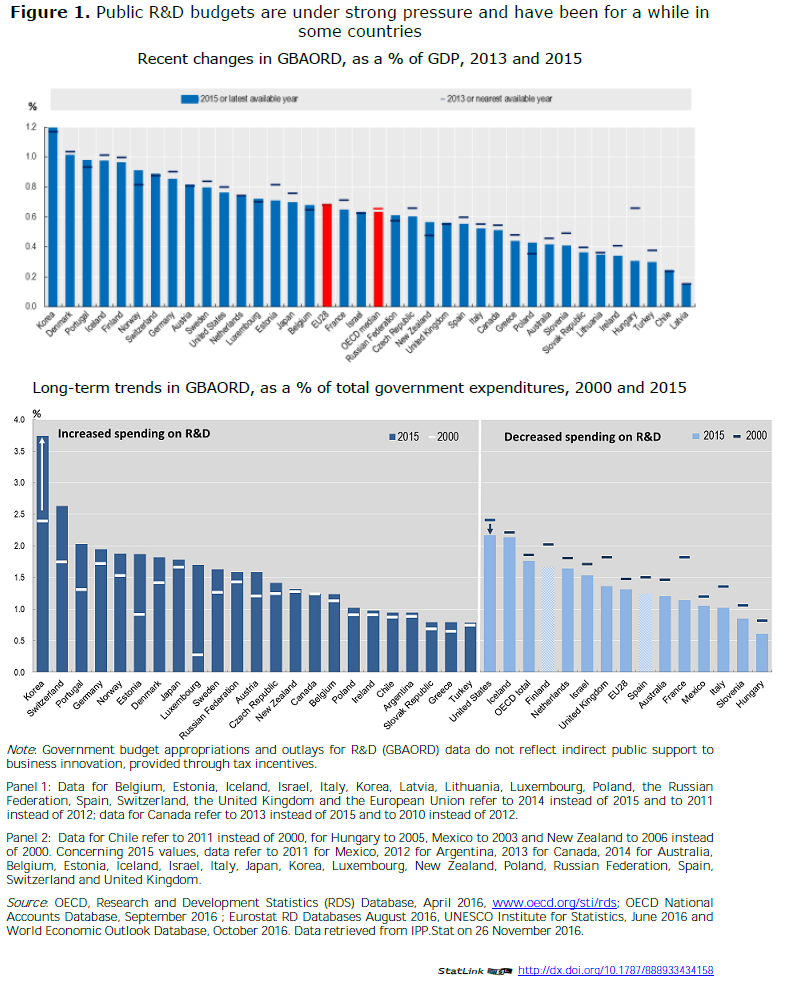

National strategies for science, technology and innovation

National strategies for science, technology and innovation (STI) have become a major pillar of post-crisis growth strategies and serve several functions in government policy making. First, they articulate the government's vision regarding the contribution of STI to a country's social and economic development. Second, they set priorities for public investment in STI and identify the focus of government reforms (e.g. the funding of university research, evaluation systems). They also mobilise STI actors around specific goals, such as energy, environmental or health issues, and may help steer the investments of private actors and of increasingly autonomous universities and public research institutes towards priority areas or technologies. Third, the elaboration of these strategies can engage stakeholders (the research community, funding agencies, business, civil society, regional and local governments) in broad consultations that will help to forge a common vision of the future and facilitate co-ordination within the innovation system.
Yet, changes in the context in which innovation emerges and policy intervention takes place are calling for adjustments in national strategies (see Chapter 1 on “Megatrends for STI” and Chapter 4 on “Recent trends in STI and policies”). Designing innovation policy and defining a national strategy have become increasingly complex as governments seek to adapt to the internal dynamics of national STI systems and balance changes in STI policy with external shifts in public policy. Innovation policy aims to address a broader range of policy challenges, mobilise a larger policy mix and deal with a larger population of STI actors and stakeholders while, at the same time, budgetary constraints and strong competing policy interests (e.g. the sustainability of pension and health systems) are putting public budgets for innovation under great pressure.
Public R&D budgets have partially offset the decline in business R&D investments during the global economic downturn (OECD, 2014a; 2014b). But, in view of current budgetary conditions, government efforts on R&D have plateaued, and even receded, in many countries. The intensity of government budget appropriations or outlays for R&D (GBAORD), relative to GDP, decreased in most OECD and partner economies between 2012 and 2015, reflecting the simultaneous recovery in GDP and stagnation or decline in absolute public R&D budgets (Figure 1, Panel 1). While most countries reviewed in the latest EC/OECD International Survey on STI policies (STIP) anticipate positive developments in public R&D budgets in the coming years, Finland and the Netherlands foresee budgetary cuts, Canada, the Czech Republic, Hungary, Ireland, Italy and the United States anticipate a budgetary status quo, and China and Korea expect public R&D spending to slow. For some European countries (Greece, Portugal), the European Horizon 2020 Framework Programme is expected to play a pivotal role in the evolution of national R&D budgets.
In addition, in many countries R&D accounts for a lower share of public spending than it did 15 years ago. GBAORD accounts in most OECD countries for 1% to 2% of total government expenditures, including expenditures engaged at state and local levels. Long-term trends in GBAORD and national accounts data show that public efforts devoted to R&D have decreased in relative terms, i.e. compared to other expenditure items, in almost half of OECD countries since the early 2000s.
The economic and fiscal situation is reshaping the conditions and modalities of government intervention in the field of STI.
 [1]
Country responses to the latest EC/OECD International STIP Survey point to some common features in national STI strategies and also show cross-country differences in policy goals and priorities across OECD countries and key emerging economies.
All 52 countries that participated in the STIP Survey 2016 have reported having one or several national strategies and action plans for STI in place (see annex table on national STI strategies). This has not always been the case, as several countries recently lacked any formal STI strategy. This global trend reflects the rising status of innovation in broader national policy agendas. Advanced economies have devoted greater attention and resources to this specific policy domain in recent years, while emerging economies have tended to include STI strategies in their longer-term economic development strategies (OECD, 2014a).
Most countries give high priority to supporting business innovation and entrepreneurship in acknowledgement of the central role of firms in innovation processes. This feature is independent of the degree of advancement of national innovation systems, as measured here by the intensity of domestic R&D expenditure as a percentage of GDP (Figure 2, Panel 1). However, approaches in practice vary. Some countries put the emphasis on business support programmes, others on improving framework conditions for innovation, in a more bottom-up approach, and others on targeting areas of strategic priority.
Typically, for countries that already rank high in terms of business R&D and innovation, there is a focus on investing in the science base, both public research and human resources, to strengthen the foundations for future innovation (OECD, 2010). In Sweden, the 2012 Research and Innovation Bill articulated the principles of an S&T and research-based innovation policy for the period 2013-16, with large investments planned in research infrastructures, university excellence and multidisciplinary research. Japan’s 4th Basic S&T Plan (2011-16), in line with previous Plans, promoted the development of research infrastructures, especially joint infrastructures, and the 5th S&T Basic Plan (2016-20) has put the emphasis on supporting interdisciplinary research. Finland is currently reforming its research and innovation policy so as to reflect the recommendations of its Research and Innovation Policy Council and maintain its position as an innovation leader. Key developments include a radical reform of the higher education system and improvements in the skills base.
The high-performing countries also tend to orientate their research and innovation support so as to gain competitive advantage in future growth areas, such as green technologies and health. Countries that identified innovation for sustainable, green growth as a major STI policy priority in 2016 tend to be more R&D-intensive (Figure 2, Panel 1). Focusing on the two top outliers, i.e. the two countries that spend the most on R&D (more than 4% of GDP in 2014) and that see environmental challenges as a major national STI priority, Korea has invested a total of USD 44.1 billion since 2013 for green technology through its 3rd S&T Basic Plan. Israel has shown a growing interest in the development of cleantech sectors and has allocated new resources to water and oil-substitute technologies since 2012. With its Green Growth Strategy (2012-20), it committed to remove regulatory obstacles to green growth and boost the transition to sustainable consumption.
Small, open OECD countries with high exposure to trade and foreign direct investment (FDI) are more likely to consider the challenges posed by STI globalisation and increasing international co-operation as major policy priorities. The three Belgian authorities (Brussels Capital, Flanders and Wallonia) and the country’s federal government have given particular emphasis to European integration and cross-border scientific co-operation in their respective strategic documents. One of the goals of the Irish Strategy for Research and Development, Science, and Technology (2015-20) is to maintain the country’s strong research system and attract international talent.


Catching-up and emerging economies also intend to address the challenges raised by STI globalisation, as they seek to escape the “middle-income trap” and reach, through innovation, segments of higher value-added along global value chains (GVCs). They generally mobilise innovation to diversify their economies and build strategic areas of competitiveness. China’s Medium- and Long-Term Plan for S&T Development (2006-20) sets out ambitions to restructure Chinese industry and shift from investment-driven growth to innovation-driven growth. Indonesia’s Vision and Mission S&T Statement (2005-25) aims to foster the country’s transition toward a knowledge-based economy. India’s National Manufacturing Policy (NMP) (2011) aims to drive the manufacturing sector's growth and improve its global competitiveness and environmental sustainability. South Africa’s National Development Plan (NDP), A Vision for 2030 (2011 30), provides a general roadmap for the country’s transition towards a diversified economy. In 2015, Peru revised its Ten-Year Export Plan to develop its technology-driven service sectors, such as software and engineering consultancy, with a view to diversifying its economy and creating opportunities for Peruvian firms to integrate GVCs. Conversely, Argentina, Chile, Mexico, Thailand and Turkey are placing great emphasis on targeting areas of strategic priority and relative competitiveness. Sectoral funds constitute the backbone of STI policy in Argentina and Mexico. Chile has launched a Smart Specialisation Strategy, while Turkey’s Tenth Development Plan (2014-18) intends to transform the national innovation system into a cluster-oriented structure.
Less R&D intensive countries also tend to set a priority on increasing their skills base (Figure 2, Panel 1). Costa Rica’s National STI Plan (2015 21) defines education as a strategic area and proposes developing a new knowledge-based economic policy that would emphasize, among other issues, human capital formation. Since 2009, the Colombian National Policy on STI has aimed to strengthen the training of human resources for research and innovation. The Strategy for fostering innovation in the Republic of Croatia (2014 20) includes a component on building human capacity for research, technological development and innovation.
National strategies for STI can also vary in their duration, which rarely exceeds five to ten years. In some rare cases, the strategy timeframe is open (e.g. Czech Republic: Reform of the Research, Development and Innovation System; New Zealand: Business Growth Agenda; Austria: Action Plan for a Competitive Research Agenda). Only a few countries (Chile, Hungary, Indonesia, New Zealand and South Africa) have projected strategic developments beyond 2022; most European countries have defined their national strategies in the framework of the EU’s Horizon 2020.
Most countries have adopted quantitative targets to benchmark their performance and progress, especially targets for R&D spending. The volume of GERD to be achieved is often expressed as a percentage of gross domestic product (GDP), and in some cases the relative contribution of the business or the public sector is specified as well. China targets S&T output in terms of patents, citations, publications and green productivity growth. New Zealand takes into account economic performance as reflected in the increase in exports, while Korea looks at S&T related job creation. Denmark and Switzerland monitor educational outcomes and the share of youth cohorts that have completed upper secondary or higher education programmes.
National STI strategies follow a vision and are designed on the basis of data-driven evidence, opportunity tools such as scenarios and analyses of strengths-weaknesses-opportunities-threats (SWOT). The process of developing an innovation strategy is perhaps more important than the document itself, as it helps reveal problems, barriers and hidden opportunities and it also promotes a learning process.
Operational aspects of national strategies are often left to the innovation actors, e.g. ministries, or to the implementation and funding agencies that have enjoyed increasing autonomy over the years. National strategies can also be relayed to the operational level through regional strategies (e.g. China, Colombia, France, Hungary and Spain), implementation or action plans (e.g. Flanders in Belgium, Finland), interim roadmaps (e.g. Croatia, Germany) or contracts (e.g. university performance agreements). In Greece and the Russian Federation, national strategies are framed by legislation.
In some cases, national strategies articulate STI policy priorities in terms of the mix of policy instruments. Given the breadth of innovation policy, the instrument toolbox is large and goes well beyond a narrow focus on research (IPP, 2014). As examples, Australia, Belgium (federal government) and Finland have included tax incentive schemes for R&D in their national strategies.
Many countries have included a number of evaluation rules and tools in their strategy. Evaluation concerns not only discrete policy interventions or instruments but also entire research portfolios or the overall research and innovation system (see the policy profile on “Evaluation and impact assessment of STI policies”).
Many countries covered in the 2016 edition of the OECD STI Outlook have revised their national strategy for STI since the 2014 edition (Figure 3). As compared to other policy areas in the policy mix for innovation, governments have made particular efforts in refining their STI policy orientation and adjusting their national STI strategies to evolving socio-economic conditions.
Responsible research and innovation (RRI) policies. The design of more RRI policies through dedicated strategies or plans to meet societal challenges is a striking change in the global STI policy landscape in recent years (see also the policy profiles on “Public engagement in STI policy” and on “Building a science and innovation culture”). This reflects a real shift in thinking that would better align STI with societal goals and ensure that social and ethical principles are integrated upstream into policy making (e.g. setting priorities, funding research, evaluations, etc.).
- Societal challenges. European countries are aligning their national strategies with Horizon 2020 to tackle major societal challenges, including health, food, mobility, security and freedom. Australia’s National Innovation and Science Agenda (2016 20) integrates social and ageing-related issues as well. One of the objectives of Croatia’s Smart Specialisation Strategy (since 2016) has been to address societal challenges by increasing strategic partnerships and involving stakeholders in decision-making mechanisms (see the policy profile on “Public engagement in STI policy”).
- Participative innovation policy. Several countries have taken a participatory approach to the design and implementation of their national strategies, also as a way to develop more RRI policies. Belgium (Brussels Capital) has made participative STI governance a special focus of its revised Regional Innovation Plan (2016 20). Denmark carried out a national dialogue with non-state stakeholders to prepare its Innovation Strategy and develop a catalogue of challenges. Greater dialogue with civil society is one of the five pillars of Germany’s HighTech Strategy (third edition adopted in 2014). Society is perceived as a central player, and the Strategy aims to enhance its active participation and focus on society's need to develop and implement forward-looking solutions (see the policy profile on “Public engagement in STI policy”).
- Social cohesion. Income disparities increased in several OECD and non-OECD economies during the global financial crisis. National STI strategies are used to enhance social cohesion while boosting economic growth. France’s National Strategy for Higher Education (2014 18), Mexico’s National Development Plan (2013 18) and Hungary’s National Reform Programme (2013 20) renew the government’s commitment to social development. The Netherlands White Paper on Science Policy ("Vision for Science 2025”) and Croatia’s Action Plan Science and Society (2014 20) address gender issues in research programmes so as to promote equal opportunities for women in science careers.
- Building a culture for innovation. A large number of countries have implemented initiatives for building a broader science and innovation culture and encouraging the greater appropriation of STI benefits. These initiatives aim both to strengthen skills in science, technology, engineering and mathematics (STEM) and to foster “soft” skills and an entrepreneurial spirit. They target youth at schools, as well as workers and civil society at large. This has been one of the most active policy areas in the overall policy mix for innovation and the most active one as regards human resources and education policies. Many of these initiatives are large public events, promotion campaigns, or competitions or awards (see the policy profile on “Building a science and innovation culture”).

Competitiveness policies. While many governments have looked at innovation as an important tool for addressing a range of global and societal challenges, national innovation strategies have increasingly been integrated into the competiveness agenda. Argentina’s Innovadora 2020 strategy extends the scope of the former National Plan for STI to improve national economic competitiveness. Australia has adopted its National Industry Investment and Competitiveness Agenda in 2014, and a ministerial taskforce has been established to promote competitiveness and productivity through innovation and R&D. Chile’s Innovation Plan (2014 25) is a guiding document for national STI institutions that is aimed at strengthening STI and entrepreneurship as key pillars of productivity, competitiveness and economic dynamism. Belgium (Wallonia) introduced Competitiveness Clusters in its Strategy for an integrated research policy (“Marshall Plan 4.0”). Similar initiatives to enhance competitiveness within national STI plans have recently been implemented in Lithuania and Norway and at the level of the European Union.
New industrial policy and targeting of strategic technologies/sectors. Besides their support for general-purpose technologies such as nanotechnology, biotechnology and information and communication technologies (ICTs), many OECD countries are emphasising support for innovation in strategic technologies or sectors, including traditional ones (e.g. agriculture) and services. A number of STI strategies include industrial policy in their innovation policies (see the policy profile on “New industrial policies” and the series of sector- or technology-targeted policy profiles in Chapter 9 on Sectoral innovation).
Wider toolkit. There has been a strong push to accelerate the transfer, exploitation and commercialisation of public research (e.g. the forthcoming Brussels Regional Innovation Plan; Germany’s High-Tech Strategy; Ireland's Strategy for Research and Development, Science and Technology; Lithuania’s Innovation Development Programme (2014 20); the Research and Innovation Strategy for Portugal; Spain’s National Plan for Scientific and Technical Research and Innovation (2013 16); and Turkey’s tenth five-year Development Plan (2014 18) (see the policy profile “Commercialisation of public research”), and more attention is paid to demand-side instruments (see the policy profiles “Stimulating demand for innovation” and “Policy mix for business R&D and innovation”). Countries have adopted dedicated strategies for public procurement and implemented a broad range of policy instruments with a view to leveraging innovation through public demand: awareness-raising initiatives and the training of civil servants, improved dialogue between procurers and suppliers; standards; changes in legislation; financial and non-financial support to SMEs for accessing public tenders; etc.
Questioning national R&D spending targets. Many governments’ capacity to drive further increases in domestic R&D expenditure is now limited. The development of domestic R&D capacity increasingly relies on firms’ engagement in innovation activities. Given the current world economic outlook and the recent slowdown in firms’ investments in intangible assets (see Chapter 4 on “Recent trends in STI and policies”), the gap between overall strategic R&D spending targets and current R&D expenditure is often too large to be closed by target dates (Figure 4). While most EU countries are sticking to the Lisbon target of 3% of GDP for R&D expenditure, Greece has revised its ambitions downward from 1.5% to 1.2%, Spain from 2.5% to 2% and Ireland from 3% to 2%. Iceland is the only country that raised its R&D spending target from 3% to 4% of GDP.
Evaluation and monitoring as part of the overall strategy. Measuring the impact of policies has become a key aspect of STI policy governance. Attention has been paid to developing an evidence base for policy making and to strengthening the role of evaluation. Belgium (Brussels Capital) integrated strategic monitoring, evaluation and the strengthening of the Scientific Policy Board in the main actions of its Regional Innovation Plan (2013-20). Slovenia’s Research Infrastructure Roadmap (2012 20) serves to monitor the implementation of public policy and goals in this area. Israel has set a high priority on developing an information system in innovation. Italy’s National Research Plan (2014 20) is reinforcing the monitoring and transparency of its investments to increase the efficiency and quality of expenditure.

Looking further ahead. A number of countries have conducted foresight studies up to 2030, including Germany, France, Korea, the Russian Federation and the United Kingdom (see Chapter 2 on “Future technology trends” for an overview of some national foresight exercises). The French Innovation 2030 Committee was tasked to propose several means of meeting the needs of tomorrow's society through major innovations. A new version of the French key technology foresight study by the Ministry of the Economy, Industry and the Digital Sector was published in 2016. The Russian Federation implemented its Foresight Initiative toward 2030 in 2014. The corresponding Science and Technology foresight exercise was published in 2015. An exercise up to 2040 is in preparation. Simultaneously, some countries modified their long-term vision by a more operational short-term approach. The scope of Japan’s Comprehensive Strategy on Science and Innovation, which had a perspective for up to 2030, was shortened to the next fiscal year in order to accompany the implementation of the 5th S&T Basic Plan.
EC (European Commission)/OECD (forthcoming), International Database on Science, Technology and Innovation Policies (STIP), edition 2016, www.innovationpolicyplatform.org/sti-policy-database [5].
Innovation Policy Platform (IPP), module on Public Policy and Governance available at www.innovationpolicyplatform.org/content/public-policy-and-governance?topic-filters=11378 [6].
Kergroach, S., J. Chicot, C. Petroli, J. Pruess, C. van OOijen, N. Ono, I. Perianez-Forte, T. Watanabe, S. Fraccola and B. Serve, (forthcoming-a), “Mapping the policy mix for innovation: the OECD STI Outlook and the EC/OECD International STIP Database”, OECD Science, Technology and Industry Working Papers.
Kergroach, S., J. Pruess, S. Fraccola and B. Serve, (forthcoming-b), “Measuring some aspects of the policy mix: exploring the EC/OECD International STI Policy Database for policy indicators”, OECD Science, Technology and Industry Working Papers.
OECD (2014a), OECD Science, Technology and Industry Outlook 2014, OECD Publishing, Paris, http://dx.doi.org/10.1787/sti_outlook-2014-en [7].
OECD (2014b), Main Science and Technology Indicators, Database, December, www.oecd.org/sti/msti [8].
OECD (2012), “STI governance structures and arrangements”, in OECD Science, Technology and Industry Outlook 2012, OECD Publishing, Paris, http://dx.doi.org/10.1787/sti_outlook-2012-9-en [9].
OECD (2010), “Main trends in science, technology and innovation policy”, in OECD Science, Technology and Industry Outlook 2010, OECD Publishing, Paris, http://dx.doi.org/10.1787/sti_outlook-2010-6-en [10].
Contributed by Sandrine Kergroach and Jakob Pruess,
OECD Directorate for Science, Technology and Innovation, based on the work carried out by the OECD Committee for Scientific and Technological Policy.
Please cite as: OECD (2016), "National strategies for STI" in OECD Science, Technology and Innovation Outlook 2016, OECD Publishing, Paris, http://dx.doi.org/10.1787/sti_in_outlook-2016-8-en [12].